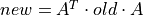
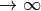
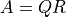
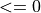

fudge.core.math package¶
Subpackages¶
- fudge.core.math.test package
- fudge.core.math.xData package
- Subpackages
- Submodules
- fudge.core.math.xData.LegendreSeries module
- fudge.core.math.xData.V_W_XYs module
- fudge.core.math.xData.W_XYs module
- fudge.core.math.xData.XYs module
- fudge.core.math.xData.Ys module
- fudge.core.math.xData.axes module
- fudge.core.math.xData.polynomial module
- fudge.core.math.xData.regions module
- Module contents
Submodules¶
fudge.core.math.fudge2dGrouping module¶
fudge.core.math.fudgemath module¶
This module contains useful fudge math routines that do not fit into any other module.
-
fudge.core.math.fudgemath.RoundToSigFigs(x, sigfigs)[source]¶ Rounds the value(s) in x to the number of significant figures in sigfigs.
Restrictions: sigfigs must be an integer type and store a positive value. x must be a real value or an array like object containing only real values.
-
fudge.core.math.fudgemath.checkForNaN(v, str, printErrors=True, indentation='', messages=None)[source]¶
-
fudge.core.math.fudgemath.checkNumber(v, str='', printErrors=True, indentation='', messages=None, maxAbsFloatValue=None)[source]¶
-
fudge.core.math.fudgemath.thickenXYList(list, tester, biSectionMax=6, interpolation='lin-lin')[source]¶ This functions takes a list of (x,y) points and a function, tester.evaluateAtX, and bi-sectionally adds points to obtain linear-linear tolerance of the returned list and tester.evaluateAtX to tester.relativeTolerance. At most biSectionMax bi-sections are performed between each consecutive pair of inputted points. It is assumed that the initial list of points and the function tester.evaluateAtX agree to tolerance tester.relativeTolerance. The instance tester must contain the members relativeTolerance and absoluteTolerance as well as the method evaluateAtX. The method evaluateAtX takes an x-value and returns its y-value.
fudge.core.math.linearAlgebra module¶
-
fudge.core.math.linearAlgebra.affine_transform_covariance(covarianceMatrix, transformMatrix)[source]¶ Perform an affine transformation to a covariance matrix, namely , where
 is a orthogonal matrix.
is a orthogonal matrix.
-
fudge.core.math.linearAlgebra.cglsqrSolve(data, dataUnc=None, dataCov=None, kernel=None, prior=None, priorCov=None, constraintVector=None, constraintMatrix=None)[source]¶ Constrainted Generalized Least-Squares Solver, based on CorAL routines. We are minimizing the following
chi^2(assuming Gaussian statistics)chi^2 = ( data - kernel * model ) * ( dataCov )^-1 * ( data - kernel * model )^T + ( prior - model ) * ( priorCov )^2 * ( prior - model )^T
subject to the constraint
constraintVector = constraintMatrix * model
Here,
^Tmeans matrix transpose and^-1means a (generalized) matrix inverse.- Returns
a tuple:
(model, modelCovariance):model: a M x 1 numpy.mat containing the extracted model parametermodelCovariance: a M x M numpy.mat containing the covariance on the extracted model paremeters
Mandatory arguments:
data : a N x 1
numpy.mat(a vector!) containing the data to fit
Optional arguments:
- kernela N x M
numpy.matthat maps the model parameters into the data space. If this is not given, it is assumed that
kernel= the identity matrix and N == M.
- kernela N x M
either
- – dataUnca N x 1
numpy.mat(a vector) of uncertianties on the data vector. This will be converted to the
dataCovif thedataCovis not specified.
—dataCov : a N x N
numpy.matcontaining the data’s covariance If this is specified, thedataUncwill be ignored.If neither the
dataUncordataCovare specified, we will set the covariance to the identity matrix. Instead of minimizing thechi^2, you will minimize| data - kernel * model |^2
- – dataUnca N x 1
both of
– prior : a M x 1
numpy.matcontaining the fitting model’s apriori values—priorCov : a M x M
numpy.matcontaining the fitting model’s apriori covarianceIf either one is not included, the second term in the
chi^2will be ignored.both of
– constraintVector : a L x 1
numpy.matcontaining values to constrain the model to match—constraintMatrix : a L x M
numpy.matrelating the model parameters to theconstraintVectorvaluesIf either one is not included, the constraint equation will be ignored.
HOW IT WORKS
Because the data and the prior are independent and not correlated, we will solve the minimization problem by stacking the prior part and the data part to construct a new
chi^2to minimize[ data ] [ dataCov | 0 ] [ kernel ] newData = [ ----- ], newCov = [ --------|--------- ], newKernel = [ ------ ] [ prior ] [ 0 | priorCov ] [ 1 ]
With these, the
chi^2may be rewritten aschi^2 = ( newData - newKernel * model )^T * newCov^-1 * ( newData - newKernel * model )
The solution to the minimization problem is the well known normal equation
modelCov = ( newKernel * newCov^-1 * newKernel^T )^-1 model = modelCov * newKernel^T * newCov^-1 * newData
Implementing this case where no uncertainty or covariance is given on the data vector is straightforward. In this case, we are solving the simple least-squares problem
minimize: | data - kernel * model |^2 + ( model - prior )*( priorCov )^-1*( model - prior )^T
In other words, we use a
dataCov = 1, the identity matrix.We comment that the equality constraints can be added in much this same way by adding the constraint vector as a fake data set, with infinitesimal uncertainties
chi^2 += lambda * ( constraintVector - constraintMatrix * model )^2
with lambda . This approach works, but can lead to numerical instabilities by adding big number to the original covariances, then taking inverses.
So, rather than doing this, we will do something different (using Lagrange multipliers). We use the “newData” etc. above and the corresponding
chi^2chi^2 = ( newData - newKernel * model )^T * newCov^-1 * ( newData - newKernel * model )
subject to the constraint
constraintMatrix * model = constraintVector
Here we are really solving the quadratic optimization problem here and the way to solve it is with Lagrange multipliers. So, extend the model thusly
[ model ] newModel = [ ---------] [ lambda ]
Here lambda is the vector of Lagrange multipliers ( there are L of them ). Minimizing the chi^2, we find the usual normal equation
( newKernel * newCov^-1 * newKernel^T ) * model = newKernel^T * newCov^-1 * newData
So, we’ll stack the normal and constraint equations:
[ newKernel * newCov^-1 * newKernel^T | constraintMatrix^T ] A = [ ------------------------------------|------------------- ] [ constraintMatrix | 0 ] and [ newKernel^T * newCov^-1 * newData ] y = [ --------------------------------- ] [ constraintVector ] giving, A * newModel = y
We can solve this a few ways:
Performing a QR decomposition on
gives  (using numpy.linalg.qr) andR * newModel = Q^T * y
We can then use the
numpy.linalg.tensorsolvefor thenewModelnewModel = numpy.linalg.tensorsolve( R, Q^T * y )
Just doing a Moore-Penrose inversion (uses SVD)
newModel = A^-1 * y
But now the meaning of A is clear: it is an “extended” covariance where the first M x M block is the covariance of the model and the rest are the covariance of the Lagrange multipliers (which are disposable).
TESTING
- Note on construction of dataCov with uncertainty:
>>> unc = numpy.array( [ 1.0, 1.0, 2.0 ] ) >>> diagCov = numpy.identity(unc.shape[0]) * unc**2 >>> diagCov array([ [ 1., 0., 0.], [ 0., 1., 0.], [ 0., 0., 4.]])
- Also, without specifying an uncertainty or covariance, one finds:
>>> dataCov = numpy.identity( data.shape[1] ) >>> dataCov array([ [ 1., 0., 0.], [ 0., 1., 0.], [ 0., 0., 1.]])
So, both alternate methods of defining the data covariance function correctly.
Define the problem
- Define a test problem:
>>> answer = numpy.array([[ 1.34883721,-0.69767442, 0.34883721, 0.1, 42.0]]) >>> kernel = numpy.array( [ [ 1.0, 2.0, 3.0, 0.0, 0.0 ], [ 2.0, 3.0, 4.0, 0.0, 0.0 ], >>> [ 4.5, 5.4, 2.0, 0.0, 0.0 ] ] ) # Note: lower two subspaces map to 0 >>> numpy.dot( kernel, answer.T ) array([[1.], [2.], [3.]])
- Test data:
>>> data = numpy.array([ [ 1.1, 1.89, 3.05 ] ] ) >>> dataCov = numpy.array([ [ 1.0, 0.1, 0.1 ], [ 0.1, 1.0, 0.1 ] , [ 0.1, 0.1, 1.0 ] ] )
- Constrain the last two elements of the model to add to 42.1:
>>> constraintVector = numpy.array( [[ 42.1 ]] ) >>> constraintMatrix = numpy.array( [[ 0.0, 0.0, 0.0, 1.0, 1.0 ]] )
- A apriori guess to the result (good to < 5% in all 4 dimensions):
>>> prior = numpy.array([[ 1.3, -0.7, 0.3, 0.11, 42.2 ]]) >>> priorCov = numpy.array([ [ 0.07 , 0. , 0. , 0. , 0. ], [ 0. , 0.5 , 0. , 0. , 0. ], [ 0. , 0. , 0.4 , 0. , 0. ], [ 0. , 0. , 0. , 0.1 , 0. ], [ 0. , 0. , 0. , 0. , 20. ]])
This might be a little too good…
A data only solution
- Using data only, we get:
>>> modelCov = numpy.linalg.pinv( dot_product( kernel.T, numpy.linalg.pinv( dataCov ), kernel ) ) >>> modelCov array([[ 19.2436993 , -17.66414278, 4.23904813, 0. , 0. ], [-17.66414278, 16.28177393, -3.95484045, 0. , 0. ], [ 4.23904813, -3.95484045, 1.03439697, 0. , 0. ], [ 0. , 0. , 0. , 0. , 0. ], [ 0. , 0. , 0. , 0. , 0. ]]) >>> model = dot_product( modelCov, kernel.T, numpy.linalg.pinv( dataCov ), data.T ) >>> model array([[ 0.66232558], [-0.05465116], [ 0.18232558], [ 0. ], [ 0. ]])
Note: the last to elements in the model are zero because there was no way to control them given the kernel in play. Without a handle on the last two elements, the fitting cannot do better than this.
A data+prior solution
- With data+prior, we first repack things:
>>> newData = stackHorizontal( [ data, prior ] ) >>> newData array([[ 1.1 , 1.89, 3.05, 1.3 , -0.7 , 0.3 , 0.11, 42.2 ]]) >>> newKernel = stackVertical( [ kernel, numpy.identity( prior.shape[1] ) ] ) >>> newKernel array([[ 1. , 2. , 3. , 0. , 0. ], [ 2. , 3. , 4. , 0. , 0. ], [ 4.5, 5.4, 2. , 0. , 0. ], [ 1. , 0. , 0. , 0. , 0. ], [ 0. , 1. , 0. , 0. , 0. ], [ 0. , 0. , 1. , 0. , 0. ], [ 0. , 0. , 0. , 1. , 0. ], [ 0. , 0. , 0. , 0. , 1. ]])
- Now, we can rework the algorithm above:
>>> newCov = stackVertical([stackHorizontal([dataCov, numpy.zeros((dataCov.shape[0], priorCov.shape[1]))]), stackHorizontal([numpy.zeros((priorCov.shape[0], dataCov.shape[1])), priorCov])]) >>> newCov array([[ 1. , 0.1 , 0.1 , 0. , 0. , 0. , 0. , 0. ], [ 0.1 , 1. , 0.1 , 0. , 0. , 0. , 0. , 0. ], [ 0.1 , 0.1 , 1. , 0. , 0. , 0. , 0. , 0. ], [ 0. , 0. , 0. , 0.07, 0. , 0. , 0. , 0. ], [ 0. , 0. , 0. , 0. , 0.5 , 0. , 0. , 0. ], [ 0. , 0. , 0. , 0. , 0. , 0.4 , 0. , 0. ], [ 0. , 0. , 0. , 0. , 0. , 0. , 0.1 , 0. ], [ 0. , 0. , 0. , 0. , 0. , 0. , 0. , 20. ]]) # use Moore-Penrose generalized inverse (ie SVD inversion) >>> modelCov = numpy.linalg.pinv( dot_product( newKernel.T, numpy.linalg.pinv( newCov ), newKernel ) ) >>> modelCov array([[ 6.30909610e-02, -5.01795451e-02, 5.99338297e-03, 0.00000000e+00, 0.00000000e+00], [ -5.01795451e-02, 9.30182090e-02, -5.02878134e-02, 0.00000000e+00, 0.00000000e+00], [ 5.99338297e-03, -5.02878134e-02, 7.63220083e-02, 0.00000000e+00, 0.00000000e+00], [ 0.00000000e+00, 0.00000000e+00, 0.00000000e+00, 1.00000000e-01, 0.00000000e+00], [ 0.00000000e+00, 0.00000000e+00, 0.00000000e+00, 0.00000000e+00, 2.00000000e+01]]) >>> model = dot_product( modelCov, newKernel.T, numpy.linalg.pinv( newCov ), newData.T ) >>> model array([[ 1.30359097], [ -0.64662084], [ 0.32428234], [ 0.11 ], [ 42.2 ]])
- A good prior gives a good result:
>>> residual = data.T - dot_product( kernel, model ) >>> residual array([[ 0.11680368], [-0.0744488 ], [ 0.02702848]]) >>> error = answer.T - model >>> error array([[ 0.04524624], [-0.05105358], [ 0.02455487], [-0.01 ], [-0.2 ]])
- The final uncertainty is not bad:
>>> uncertainty = [ math.sqrt(modelCov[i,i]) for i in range( modelCov.shape[0] ) ] >>> uncertainty [0.25117914115531315, 0.30498886706247513, 0.2762643810785747, 0.31622776601683794, 4.47213595499958]
A data+constraint+prior solution
- Next, with everything (data+constraint+prior)… First we stack the normal equation and the constraint equation:
>>> reallyNewData = stackHorizontal([(newKernel.T * numpy.linalg.pinv(newCov) * newData.T).T, constraintVector]) >>> reallyNewData matrix([[ 35.04920635, 19.82814815, 14.56111111, 1.1, 2.11, 42.1 ]]) >>> reallyNewKernel = stackVertical( [ newKernel.T*numpy.linalg.pinv( newCov )*newKernel, constraintMatrix ] ) >>> reallyNewKernel matrix([[ 37.13293651, 28.66666667, 15.97222222, 0. , 0. ], [ 28.66666667, 38.82962963, 23.33333333, 0. , 0. ], [ 15.97222222, 23.33333333, 27.22222222, 0. , 0. ], [ 0. , 0. , 0. , 10. , 0. ], [ 0. , 0. , 0. , 0. , 0.05 ], [ 0. , 0. , 0. , 1. , 1. ]])
- Now we just invert the reallyNewKernel
>>> model = numpy.linalg.pinv( reallyNewKernel ) * reallyNewData.T matrix([[ 1.30359097], [ -0.64662084], [ 0.32428234], [ 0.10999476], [ 41.99052891]])
- The fit is just a little better than with the prior alone – but now the last element is nailed down:
>>> residual = data.T - kernel*model matrix([[ 0.11680368], [-0.0744488 ], [ 0.02702848]]) >>> error = answer.T - model >>> error matrix([[ 0.04524624], [-0.05105358], [ 0.02455487], [-0.00999476], [ 0.00947109]]) >>> constraintMatrix*model matrix([[ 42.10052368]])
- We compute the covariance as the inverse of the reallyNewKernel:
>>> modelCov = numpy.linalg.pinv( reallyNewKernel ) >>> modelCov matrix([[ 6.30909610e-02, -5.01795451e-02, 5.99338297e-03, 0.00000000e+00, 0.00000000e+00, 0.00000000e+00], [ -5.01795451e-02, 9.30182090e-02, -5.02878134e-02, 0.00000000e+00, 0.00000000e+00, 0.00000000e+00], [ 5.99338297e-03, -5.02878134e-02, 7.63220083e-02, 0.00000000e+00, 0.00000000e+00, 0.00000000e+00], [ 0.00000000e+00, 0.00000000e+00, 0.00000000e+00, 9.99975063e-02, -4.98740680e-04, 2.49370340e-05], [ 0.00000000e+00, 0.00000000e+00, 0.00000000e+00, -9.97481360e-02, 5.03728087e-02, 9.97481360e-01]])
- The new uncertainties are much reduced:
>>> uncertainty = [ math.sqrt(modelCov[i,i]) for i in range( modelCov.shape[0] ) ] >>> uncertainty [0.25117914115531315, 0.30498886706247513, 0.2762643810785747, 0.316223823100982, 0.22443887510442173]
A data+constraint solution
Let’s see how well we do using just the constraints and the data fitting. As before, we stack the normal and constraint equation, but this time use the old kernel and old data (that is, without the prior):
>>> reallyNewData = stackHorizontal([(kernel.T * numpy.linalg.pinv( dataCov ) * data.T ).T, constraintVector]) >>> reallyNewData matrix([[ 16.47777778, 21.22814815, 13.81111111, 0. , 0. , 42.1 ]]) >>> reallyNewKernel = stackVertical( [ kernel.T*numpy.linalg.pinv( dataCov )*kernel, constraintMatrix ] ) >>> reallyNewKernel matrix([[ 22.84722222, 28.66666667, 15.97222222, 0. , 0. ], [ 28.66666667, 36.82962963, 23.33333333, 0. , 0. ], [ 15.97222222, 23.33333333, 24.72222222, 0. , 0. ], [ 0. , 0. , 0. , 0. , 0. ], [ 0. , 0. , 0. , 0. , 0. ], [ 0. , 0. , 0. , 1. , 1. ]])
- Now we just invert the reallyNewKernel
>>> model = numpy.linalg.pinv( reallyNewKernel ) * reallyNewData.T >>> model matrix([[ 0.66232558], [ -0.05465116], [ 0.18232558], [ 21.05 ], [ 21.05 ]])
- Ack! it made sure the constraint is obeyed, by divying up the 42.1 among the two uncontrolled model parameters!
>>> residual = data.T - kernel*model >>> residual matrix([[ -1.07913678e-13], [ -2.13828955e-13], [ -4.26325641e-13]]) >>> error = answer.T-model >>> error matrix([[ 0.68651163], [ -0.64302326], [ 0.16651163], [-20.95 ], [ 20.95 ]])
What is telling is that, to accomodate the constraint, all the uncertainty had to be shifted to the first three components of the model:
>>> modelCov = numpy.linalg.pinv( reallyNewKernel ) # use Moore-Penrose generalized inverse (ie SVD inversion) >>> modelCov matrix([[ 19.2436993 , -17.66414278, 4.23904813, 0. ,0. , 0. ], [-17.66414278, 16.28177393, -3.95484045, 0. ,0. , 0. ], [ 4.23904813, -3.95484045, 1.03439697, 0. ,0. , 0. ], [ 0. , 0. , 0. , 0. ,0. , 0.5 ], [ 0. , 0. , 0. , 0. ,0. , 0.5 ]]) >>> uncertainty = [ math.sqrt(modelCov[i,i]) for i in range( modelCov.shape[0] ) ] >>> uncertainty [4.386764103176406, 4.035068020722195, 1.0170530818673396, 0.0, 0.0]
The moral is that we’d better know what spaces are constrainted by data and which ones are not!!!
-
fudge.core.math.linearAlgebra.check_covariance_element_bounds(A, warnAll=False, verbose=False)[source]¶
-
fudge.core.math.linearAlgebra.check_positive_semidefinite(A, warnAll=False, verbose=False)[source]¶ Checks that all elements in a matrix are 
-
fudge.core.math.linearAlgebra.check_real_and_finite(A)[source]¶ Checks that all elements in a matrix are read and finite
-
fudge.core.math.linearAlgebra.check_symmetric(A, warnAll=False, verbose=False)[source]¶ Checks whether a matrix is symmetric, i.e.

-
fudge.core.math.linearAlgebra.correlation_to_covariance(correlationMatrix, uncertainty)[source]¶ Convert a correlation matrix to a covariance matrix
-
fudge.core.math.linearAlgebra.correlation_to_relative(correlationMatrix, data)[source]¶ Convert a correlation matrix to a relative covariance matrix
Warning
not implemented
-
fudge.core.math.linearAlgebra.covariance_to_correlation(matrix)[source]¶ Convert a covariance matrix to a correlation matrix
-
fudge.core.math.linearAlgebra.covariance_to_relative(matrix, rsd)[source]¶ Convert an absolute covariance matrix to a relative covariance matrix
-
fudge.core.math.linearAlgebra.diff_matrices(matrixOne, matrixTwo, printDiagnostics=True, quiet=True)[source]¶
-
fudge.core.math.linearAlgebra.dot_product(*args)[source]¶ Matrix multiplication (dot product) of all arguments:
>>> numpy.dotproduct(V.T, A, V) # returns V.T * A * V
-
fudge.core.math.linearAlgebra.hist_interp_of_matrix(supergrid, mat, erows, ecols=None)[source]¶ Put ‘histogram’ interpolation of matrix onto a new supergrid:
- Parameters
supergrid – energy list to use for new matrix
mat – original matrix to be interpolated
erows – energy bins for rows/x-axis of original matrix
ecols – energy bins for columns/y-axis, same as ex by default
all points in erows and ecols must also be in supergrid, or ValueError is raised
-
fudge.core.math.linearAlgebra.matrix_from_eigendecomposition(e, v, ndim, doInverse=False, onlyLargeEVs=True, onlyPositiveEV=True, smallEVAbsTol=1e-10, smallEVRelTol=1e-06)[source]¶
-
fudge.core.math.linearAlgebra.off_diagonals(matrix)[source]¶ Return indices for all off-diagonal elements.
>>> numpy.mat[ numpy.offdiag( mat ) ] *= -1
-
fudge.core.math.linearAlgebra.plot_matrix(m, title='a matrix', scaling=None, scalingFloor=0.0)[source]¶ - Parameters
m – a numpy.mat instance
title – a string to use as the plot title
scaling –
either None, ‘log’, or ‘asinh’ this scales the value of the matrix plotted in the following ways
* None : no scaling * 'log' : each element is plotted as ln(x) -- good for covariances which must always be positive semidefinite. If scalingFloor > 0.0, than we do ln(max(x, scalingFloor)). * 'asinh' : each element is scaled as asinh(x). This exaggerates scale for values of abs(x)<1.0.
scalingFloor – the minimum value of each element that gets plotted.
-
fudge.core.math.linearAlgebra.print_matrix(M, pretty=True, elementSize=8)[source]¶ Simple matrix printer, makes little attempt to be pretty, but does print huge matrices
-
fudge.core.math.linearAlgebra.pruned_matrix(A, onlyLargeEVs=True, onlyPositiveEV=True, smallEVAbsTol=1e-10, smallEVRelTol=1e-06)[source]¶ Rebuild
“by hand”, the safe way. must admit an eigenvalue decomposition.
-
fudge.core.math.linearAlgebra.pruned_matrix_inverse(A, onlyLargeEVs=True, onlyPositiveEV=True, smallEVAbsTol=1e-10, smallEVRelTol=1e-06)[source]¶ Build inverse of
“by hand”, the safe way. must admit an eigenvalue decomposition.
-
fudge.core.math.linearAlgebra.rebin_matrix(arr, N=2)[source]¶ Rebin array by factor of N (not necessarily multiple of 2)
-
fudge.core.math.linearAlgebra.reduce_off_diagonals(corr_mat, thresh)[source]¶ Sometimes easiest way to eliminate negative eigenvalues is to reduce off-diagonal portion of the correlation matrix
-
fudge.core.math.linearAlgebra.relative_to_correlation(relativeMatrix, data)[source]¶ Convert a relative covariance matrix to a correlation matrix
Warning
not implemented
-
fudge.core.math.linearAlgebra.relative_to_covariance(relativeMatrix, variance)[source]¶ Convert a relative covariance matrix to an absolute covariance matrix
Warning
not implemented
-
fudge.core.math.linearAlgebra.scale_off_diagonals(A, onlyScaleThese=None, scaleFactor=0.999999)[source]¶ Sam’s trick for getting UNCOR to cooperate: shrink off diagonal elements by some (small) factor
-
fudge.core.math.linearAlgebra.stackDiagonal(l)[source]¶ - Parameters
l – a list of numpy matrices, elements equal to None are ignored
A note about numpy.array shapes and indexing
a.shape = [ nRows, nCols ]
So, we index through
a[ iRow, iCol ]- Returns
a matrix packed as follows
[ l[0] | 0.0 | 0.0 | ... | 0.0 ] [ ------ | ----- | ---- | ... | ------ ] [ 0.0 | l[1] | 0.0 | ... | 0.0 ] [ ------ | ----- | ---- | ... | ------ ] [ 0.0 | 0.0 | l[2] | ... | 0.0 ] [ ------ | ----- | ---- | ... | ------ ] [ : | : | : | | : ] [ ------ | ----- | ---- | ... | ------ ] [ 0.0 | 0.0 | 0.0 | ... | l[n-1] ]
where n is the number of non-None elements in l
-
fudge.core.math.linearAlgebra.stackHorizontal(l)[source]¶ - Parameters
l – a list of numpy matrices, each with same shape[0] (i.e. same number of rows). Elements equal to None are ignored
A note about numpy.array shapes and indexing
a.shape = [ nRows, nCols ]
So, we index through
a[ iRow, iCol ]- Returns
a matrix packed as follows
[ l[0] | l[1] | ... | l[n-1] ]
where n is the number of non-None elements in l
-
fudge.core.math.linearAlgebra.stackVertical(l)[source]¶ - Parameters
l – a list of numpy matrices, each with same shape[1] (i.e. same number of columns). Elements equal to None are ignored
- Returns
a matrix packed as follows
[ l[0] ] [ ------ ] [ l[1] ] [ ------ ] [ : ] [ ------ ] [ l[n-1] ]
where n is the number of non-None elements in l
-
fudge.core.math.linearAlgebra.switchSymmetry(mlist, upperToLower=True)[source]¶ A symmetric 2-d NxN array can be stored in memory as a list of (N*(N+1)/2) numbers. The order depends on whether the upper-diagonal or lower-diagonal portion of the array is being stored. This method switches between the two representations. Note that switching from upper to lower is the same as switching the memory order from ‘column-major’ to ‘row-major’
- Parameters
mlist – list, tuple or 1d array representing input matrix
upperToLower – boolean, True = convert upper- to lower-symmetric, False = convert lower- to upper-symmetric
- Returns
list with output matrix